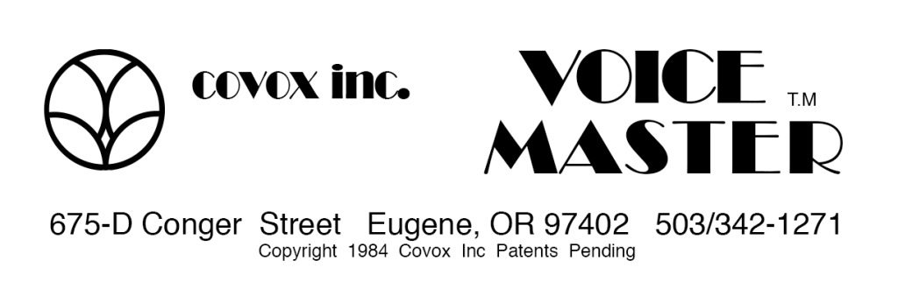
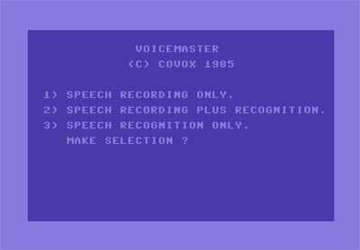

Covox Voice Master
Trainable voice command recognition for the Commodore 64 — a consumer speech I/O peripheral that let home computers listen, speak, and obey

Overview
The Covox Voice Master, released in 1984, was one of the first affordable consumer speech I/O peripherals for home computers. Initially launched for the Commodore 64 at $89.95, later ported to Apple II, Atari 8-bit, and DOS PCs, it combined three functions in one device: digital voice recording, voice playback, and trainable speech recognition. The hardware consisted of a small external ADC box connected to the computer's user port, plus an electret condenser microphone headset and earphone.
Unlike professional speech recognition systems of the era that cost thousands of dollars, the Voice Master used simple template matching: the user trained the computer by speaking each command word, which was digitized and stored. Up to 31 words could be trained for recognition. The device added new commands (LEARN, SPEAK, TRAIN, RECOG) directly into the computer's BASIC language, allowing hobbyist programmers to create their own voice-controlled applications. Bundled software included a voice-controlled Blackjack game, a Talking Calculator and Clock, and the Voice Harp Composer — which let users sing, whistle, or hum into the microphone and see the notes appear on screen.
Covox was founded in Eugene, Oregon by Larry Stewart, an aerospace industry veteran, with his son Brad Stewart responsible for product development. The Voice Master was their first product and established the company as a pioneer in consumer computer audio. Covox later became famous for the Speech Thing (1987), a simple parallel-port DAC for IBM PCs.
Deep dive
Larry Stewart founded SRT, Inc. in Southern California in 1975, working in aerospace before moving the company to Eugene, Oregon in 1982. Covox, Inc. was established as a subsidiary in 1982 with the goal of bringing affordable voice technology to the consumer computer market. The Voice Master debuted at the 1984 Summer CES in Chicago alongside competing voice products like the Chirpee ($179.95) from Eng Manufacturing. At $89.95, it dramatically undercut the competition. InfoWorld covered it in August 1984 in an article titled "Micros Pick Up Their Ears," signaling growing interest in consumer speech technology.
The Voice Master's speech recognition used template matching — a technique where the computer stores digitized samples of spoken words and compares new utterances against them. The process was explicitly multi-step: (1) TRAIN — speak a word to create a stored template; (2) RECOG — speak a word and the system returns the index number of the closest match. Per-user training was mandatory; each person had to train their own voice for each word they wanted recognized. The recognition vocabulary was up to 31 words, each under 2 seconds. Accuracy depended heavily on consistent pronunciation and choosing acoustically distinct words. The system did NOT understand language — it simply matched acoustic patterns. This made it simultaneously impressive (it worked without phoneme models or language rules) and limited (it couldn't generalize across speakers or handle natural variation). The bundled Blackjack game was one of the earliest voice-controlled computer games: players trained words like "hit" and "stand," then played using spoken commands.
A key distinction from later speech recognition systems was the Voice Master's combined input/output capability. The same hardware both digitized the user's voice for recognition AND played back recorded speech. This created a unique feedback loop: the computer spoke back to you in your own voice, and responded to your spoken commands. The Voice Harp Composer demonstrated this elegantly — sing a note into the microphone, see it appear as sheet music on screen, then play it back through the computer's audio output.
The Voice Master was a bridge product. It wasn't the first speech recognizer, nor the most accurate, nor the most commercially successful. But it was the moment when trainable speech recognition became accessible to home computer users as a programmable, interactive tool — not just a dictation machine or a home automation controller, but a new way to interact with software. It anticipated voice-controlled gaming ("Hey You, Pikachu!", Kinect voice commands), consumer voice assistants, and the entire paradigm of speaking to computers as peers rather than operators. Covox's subsequent success with the Speech Thing ensured the company's place in PC audio history, but the Voice Master was their founding vision: a computer that could listen.
Team & pioneers
- Larry Stewart. Founder of SRT, Inc. (1975) and Covox, Inc. (1982). Aerospace industry background. Moved company from Southern California to Eugene, Oregon in 1982.
- Brad Stewart. Son of Larry Stewart; VP of Covox. Responsible for development of all Covox products including the Voice Master.
- Mike Stewart. Son of Larry Stewart; helped manage the company.
Media

Sources
- InfoWorld (Aug 13, 1984) — "Micros Pick Up Their Ears" — first major press coverage of consumer voice peripherals including the Voice Master
- ANTIC Magazine (Jan 1987) — "For Sale: Atari Voices" — detailed review of Voice Master on Atari 8-bit computers
- ANTIC Magazine (Jun 1988) — Voice Master Jr. review
- Voice Master Owner's Manual (Apple II, v4.0) — primary technical documentation
- Wikipedia — Covox company history
- VGMPF Wiki — Voice Master hardware summary
- Commodore Spain — Spanish-language retrospective with photos and software download
- Nerdly Pleasures — Deep technical analysis of all Covox sound devices